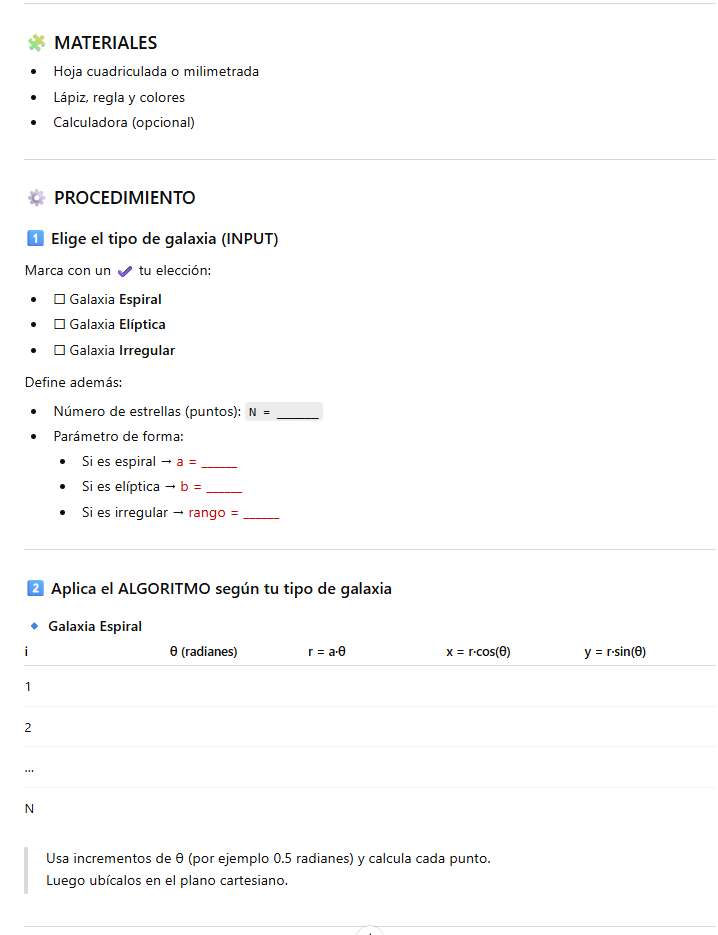
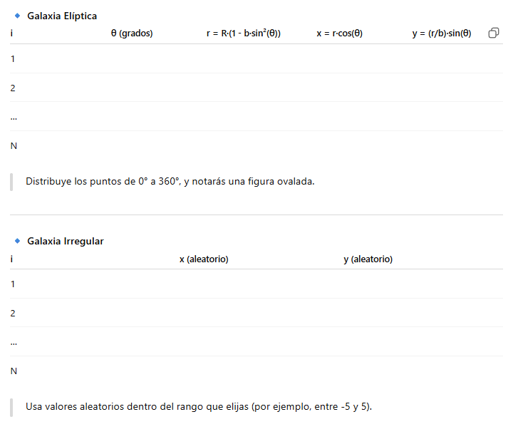
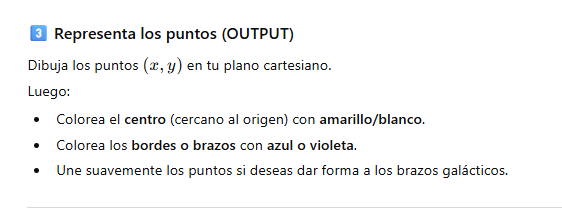

Texto
Caso práctico
Machine Learning para "Rellenar" y Mejorar Imágenes
El Machine Learning utiliza Redes Neuronales para hacer magia con las imágenes, actuando como un artista digital que rellena los detalles faltantes. Las técnicas más importantes son la Super-Resolución (para hacer imágenes pequeñas y borrosas más grandes y nítidas) y el Inpainting (para rellenar partes dañadas o que faltan en una foto). Los modelos aprenden observando millones de pares de imágenes (por ejemplo, una borrosa y su versión perfecta). Al entrenarse, la red neuronal aprende a adivinar de forma inteligente cómo deberían verse los píxeles que faltan o son de mala calidad. Modelos avanzados como las GANs (Redes Generativas Adversarias) compiten entre sí: una red genera la imagen mejorada y otra intenta desenmascarar si es falsa, obligando al generador a crear detalles muy realistas, como texturas de tela o hebras de cabello.
Estos procesos no solo estiran la imagen, sino que realmente crean información nueva y coherente. Por ejemplo, si tienes una foto muy antigua y pixelada de la abuela, la inteligencia artificial no solo la hace más grande, sino que inventa los detalles finos de su rostro basándose en todo lo que ha aprendido sobre cómo se ven las caras de las personas. Así, la foto borrosa se convierte en una versión mucho más clara y detallada, aumentando su calidad visual al predecir la información más lógica para "rellenar los huecos".
Los científicos del telescopio espacial James Webb no “fotografían” directamente las galaxias, sino que reciben datos numéricos que son procesados mediante algoritmos para reconstruir imágenes.
En esta actividad, tú serás el “algoritmo humano” que transformará números en una galaxia visual.


